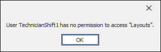
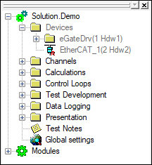

iTest User's Guide
The Security Editor is the primary interface to configure group security permissions in iTest. Several iTest permissions may be configured using LabCentral’s Group Security editor. For more information regarding LabCentral’s Group Security editor, refer to LabCentral's Administering System Security documentation.
iTest permissions are divided into three sections: Application Permissions, Other Tasks, and Test Manager Security.
The Application Permissions section is used to select which applications the users of the group have permission to use. By default, a group cannot launch any applications unless they are granted permission. When configuring application permissions, there is an option to add all applications (“All Applications” permission) or to select each application one at a time.
The following application permissions can be configured in LabCentral’s Group Security editor:
The Other Tasks section is used to define which tasks users of the group can perform. By default, users of a group cannot perform any task unless granted permission. These permissions are detailed in the tables below. A majority of task permissions use the following naming convention: Application: Task.
The following permissions appear at the top of the drop-down menu and may be shared between various applications.
Miscellaneous Task Permissions
| Permission | Description | Configurable in LabCentral |
| All Tasks | Enables users in the group to use all available tasks found in the Security Editor. |  |
| Clear Message Log | Enables users in the group to clear the message log. | |
| Exit System | Enables users in the group to exit the system using the File > Exit option, the $EXIT mailslot message, or the Close ( ) button. This task is shared between iTest Console and AutomationPanel. |
|
| Quick Exit System | Enables users in the group to use the Tools > Quick Exit option. If this task is not enabled, then the Tools > Quick Exit option is not available. This task is shared between iTest Console and AutomationPanel. | |
| Restricted Administrator | Allows for users in the group to access the Security Editor and edit users (excluding Administrators) as needed. | |
| Use Data Log Status Window | Enables users of the group to access the Data Log Status dialog by selecting Tools > Data Logs... from the main menu. This task is shared between iTest Console and AutomationPanel. | |
iTest Console Task Permissions
| Permission | Description | Configurable in LabCentral |
| Modify Tools | Enables users of the group to modify tools in iTest Console's Command Bar. | |
| Modify Actions | Enables users of the group to modify actions in iTest Console's Command Bar. | |
| Modify Schedule Rows | Enables users to use the Insert Step, Delete Step, Insert Many Steps..., Add Step, and Add Many Steps right-click options when viewing a schedule in iTest Console's main window. | |
| Modify Schedule Columns | Not used. | |
| Modify Signal List | Enables users to modify the signal list. | |
| Modify Displays | Enables users to modify displays in iTest Console's Command Bar. | |
| Modify Web Pages | Enables users to modify web pages in iTest Console's Command Bar. | |
| Use Signal Bar Diagnostics | Enables users of the group to double-click on a channel or use the Diagnostic right-click option to open the Channel Control dialog. | |
| Modify Window Layout | Enables users to modify the window layout. | |
The following permissions are available in the Security Editor tool; however, these permissions only apply to LabCentral. For more information, refer to the LabCentral Group Security Permissions documentation.
For more information about interacting with LabCentral, refer to the Interacting with LabCentral documentation. These permissions relate to the ability in Test Manager to synchronize files with a LabCentral server.
Interacting with LabCentral Task Permissions
| Permission | Description | Configurable in LabCentral |
| iTest: Synchronize with iCentral | Enables users of the group to use the Synchronize with LabCentral... right-click option. | |
| iTest: Unsynchronize with iCentral | Enables users of the group to use the Unsynchronize with LabCentral... right-click option. | |
| iTest: Add files to iCentral | Enables users of the group to use the Add to LabCentral... right-click option. | |
| iTest: Commit changes to iCentral | Enables users of the group to use the Commit changes to LabCentral... right-click option. | |
AutomationPanel Task Permissions
| Permission | Description | Configurable in LabCentral |
| AP: All Tasks | Enables users to use all AutomationPanel permissions. | |
| AP: Manage Layouts | Enables users to modify layout properties and to open, close, and delete layouts. | |
| AP: Manage Panels | Enables users to manage panel objects, but not the panel properties. This includes actions such as adding, removing, and duplicating panels. This permission is primarily used in conjunction with "AP: Modify Panel Properties." Users with this permission can use the hamburger icon for a panel in a layout or toolbar. | |
| AP: Manage Toolbars | Enables users to modify toolbar properties and to open, close, and delete toolbars. Users with this permission can use the hamburger icon for a panel in a layout or toolbar. | |
| AP: Manage TopBar Items | Enables users to edit TopBar items. | |
| AP: Rename Layout | Enables users the ability to rename layouts. This permission is primarily used in conjunction with "AP: Manage Layouts." | |
| AP: Modify Panel Properties | Enables users to modify panel properties. This permission is used in conjunction with "AP: Manage Panels." | |
SolutionBuilder Task Permissions enable users of a group access to specified features of SolutionBuilder. If a user is restricted from a feature (i.e., does not have the proper SolutionBuilder Task permission), then a dialog will display stating that the user lacks the necessary permissions.
Restricted Permissions Dialog

The table below refers to the default menu settings. If your SolutionBuilder interface has been customized, then refer to the Editor Value column to determine which editor is affected. For more information about customizing SolutionBuilder, refer to the Customizing SolutionBuilder documentation.
SolutionBuilder Tasks Permissions
| Permission | Description | Editor Value | Configurable in LabCentral |
| SolutionBuilder: All Tasks | Enables users full access to all features of SolutionBuilder. | - | |
| SolutionBuilder: Batteries – Types | Enables users access to the Battery > Types editor. | BatteryTypes | |
| SolutionBuilder: Batteries – Specimen | Enables users access to the Battery > Specimen editor. | BatterySpecimens | |
| SolutionBuilder: Device – Cyclers | Enables users access to the Devices > Cyclers editor. | Cyclers | |
| SolutionBuilder: Device – Chambers | Enables users access to the Devices > Chambers editor. | Chambers | |
| SolutionBuilder: Device – Chillers | Enables users access to the Devices > Chillers editor. | Chillers | |
| SolutionBuilder: Device – Cameras | Enables users access to the Devices > Cameras editor. | Cameras | |
| SolutionBuilder: Device – CANDevices | Enables users access to the Devices > CAN Devices editor. | CANDevices | |
| SolutionBuilder: Device – Other | Enables users access to the Devices > Other editor. | Other | |
| SolutionBuilder: Displays – Layouts | Enables users access to the Displays > Layouts editor. | Layouts | |
| SolutionBuilder: Displays – Toolbars | Enables users access to the Displays > Toolbars editor. | Toolbars | |
| SolutionBuilder: Displays – Reports | Enables users access to the Displays > Reports editor. | Reports | |
| SolutionBuilder: Displays – Picklists | Enables users access to the Displays > Picklists editor. | Picklists | |
| SolutionBuilder: Displays – Plot Buffer | Enables users access to the Displays > Plot Buffer editor. | PlotBuffer | |
| SolutionBuilder: Displays – TopBar | Enables users access to the Displays > TopBar editor. | TopBar | |
| SolutionBuilder: Parameters | Enables users access to the Parameters editor. | Parameters | |
| SolutionBuilder: Circuits | Enables users access to the Circuits editor. | Circuits | |
| SolutionBuilder: Tests – Schedules | Enables users access to the Tests > Schedules editor. | Schedules | |
| SolutionBuilder: Tests – Master Schedules | Enables users access to the Tests > Master Schedules editor. | MasterSchedules | |
| SolutionBuilder: Tests – Procedures | Enables users access to the Tests > Procedures editor. | Procedures | |
| SolutionBuilder: Tests – Scripts | Enables users access to the Tests > Scripts editor. | Scripts | |
| SolutionBuilder: Tests – Set Value Tables | Enables users access to the Tests > Set Value Tables editor. | SetValueTables | |
| SolutionBuilder: Tests – Step Conditions | Enables users access to the Tests > Step Conditions editor. | StepConditions | |
| SolutionBuilder: Tests – Map Tables | Enables users access to the Tests > Map Tables editor. | MapTables | |
| SolutionBuilder: Tests – Calculations | Enables users access to the Tests > Calculations editor. | Calculations | |
| SolutionBuilder: Tests – Circuit Calculations | Enables users access to the Tests > Circuit Calculations editor. | CircuitCalculations | |
| SolutionBuilder: Tests – Dynamic Calculations | Enables users access to the Tests > Dynamic Calculations editor. | DynamicCalc | |
| SolutionBuilder: Test Notes | Enables users access to the Test Notes editor. | TestNotes | |
| SolutionBuilder: Run Solution | Enables users access to use the Run button on the bottom menu. | - | |
| SolutionBuilder: Build Solution | Enables users access to use the Build button on the bottom menu. | - | |
| SolutionBuilder: Data Logging – Log Order Lists | Enables users access to the Data Logging > Log Order Lists editor. | LogOrderLists | |
| SolutionBuilder: Data Logging – Log Header Forms | Enables users access to the Data Logging > Log Header Forms editor. | LogHeaderForms | |
| SolutionBuilder: Data Logging – Data Logs | Enables users access to the Data Logging > Data Logs editor. | DataLogs | |
| SolutionBuilder: Data Logging – Blackbox Settings | Enables users access to the Data Logging > Blackbox Settings editor. | BlackBoxSettings | |
| SolutionBuilder: Control Loops – Control Modes | Enables users access to the Control Loops > Control Modes editor. | ControlModes | |
| SolutionBuilder: Control Loops – Control Groups | Enables users access to the Control Loops > Control Groups editor. | ControlGroups | |
| SolutionBuilder: Control Loops – PID Settings | Enables users access to the Control Loops > PID Settings editor. | PIDSettings | |
| SolutionBuilder: Channels – Definitions | Enables users access to the Channels > Definitions editor. | ChannelDefinitions. | |
| SolutionBuilder: Channels – Limit Groups | Enables users access to the Channels > Limit Groups editor. | LimitGroups | |
| SolutionBuilder: Channels – Internal Variables | Enables users access to the Channels > Internal Variables editor. | InterVars | |
| SolutionBuilder: Channels – Data Quality Groups | Enables users access to the Channels > Data Quality Groups editor. | DataQualityGroups | |
| SolutionBuilder: Modules – Device | Enables users access to the Modules > Devices editor. | ModulesDevice | |
| SolutionBuilder: Modules – Specimen | Enables users access to the Modules > Specimen editor. | ModulesSpecimen | |
| SolutionBuilder: Modules – Test | Enables users access to the Modules > Test editor. | ModulesTest | |
| SolutionBuilder: Modules – Utility | Enables users access to the Modules > Utility editor. | ModulesUtility | |
Channel List Panel Task Permissions
| Permission | Description | Configurable in LabCentral |
| ChannelListPanel: Manage Lists | Enables the Add Group, Add Empty List, and Add Active PIDs List right-click options in the Channel List Panel. | |
| ChannelListPanel: Manage Fields | Enables users to manage fields on the Channel List panel. | |
| ChannelListPanel: Modify List | Enables the Add Channels…, Remove Channels, Paste Channels, Cut Channels, Edit…, Move Up, Move Down, and Separator right-click options in the Channel List Panel. | |
| ChannelListPanel: Rename List | Enables users to rename a list. | |
| ChannelListPanel: Set Value | Enables setting the channel’s value using the In-place and Popup editor types or the Set Value... right-click menu option. | |
Message Panel Task Permissions
| Permission | Description | Configurable in LabCentral |
| MessagePanel: Remove Message | Enables users to remove messages from the Messages Panel. | |
The Test Manager Security section is used to specify which tree nodes in Test Manager users of a group are restricted from accessing. By default, all items in Test Manager are editable unless they are added to the list of restricted nodes.
 |
NOTE: | Test Manager Security cannot be configured with LabCentral's Group Security editor. |
In the image below, the user belongs to a group where the Devices node is restricted. Any items under the Devices node (e.g., Devices > EtherCAT_1(2Hdw2)) are also disabled.
Restricted Tree Node
